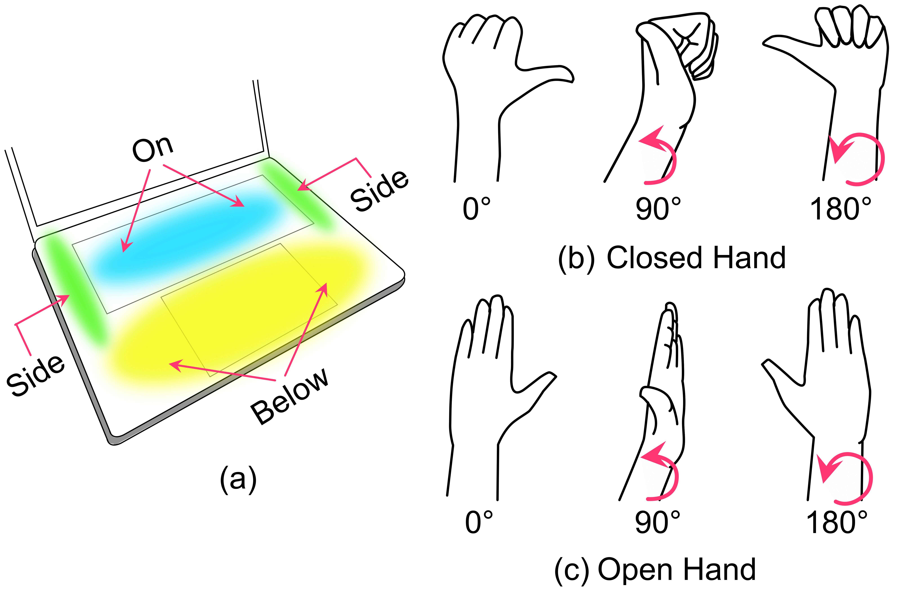
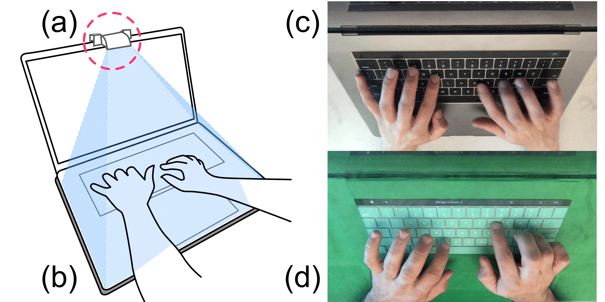
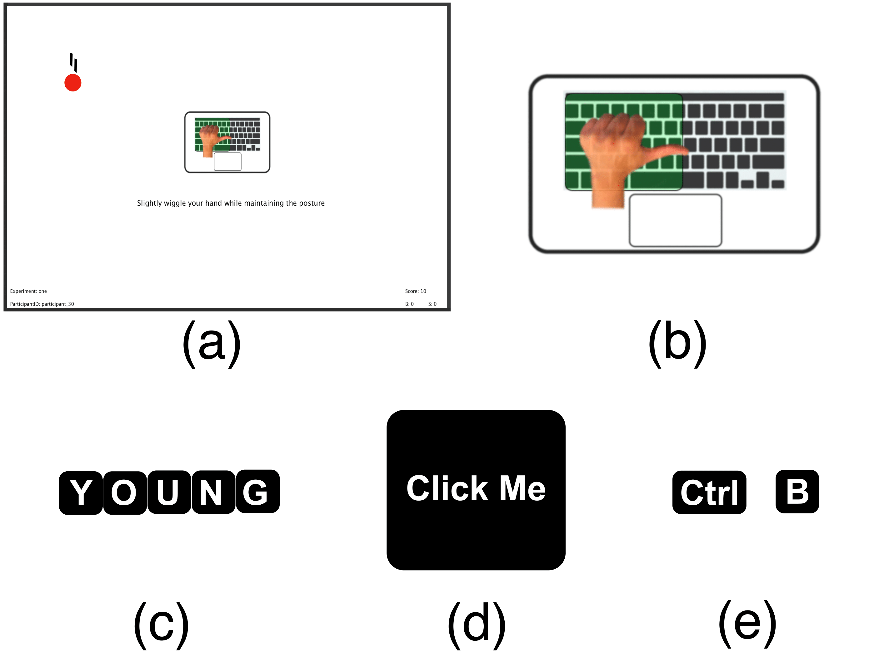
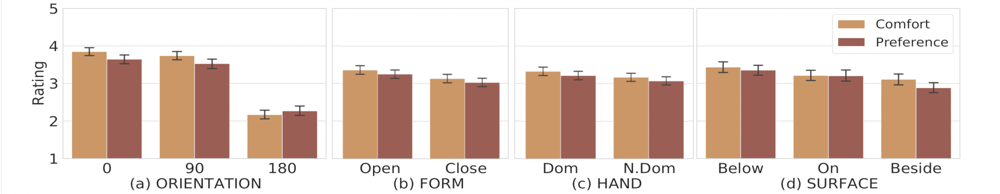
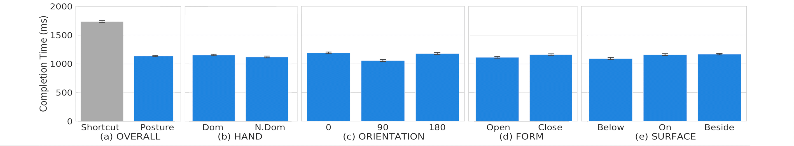
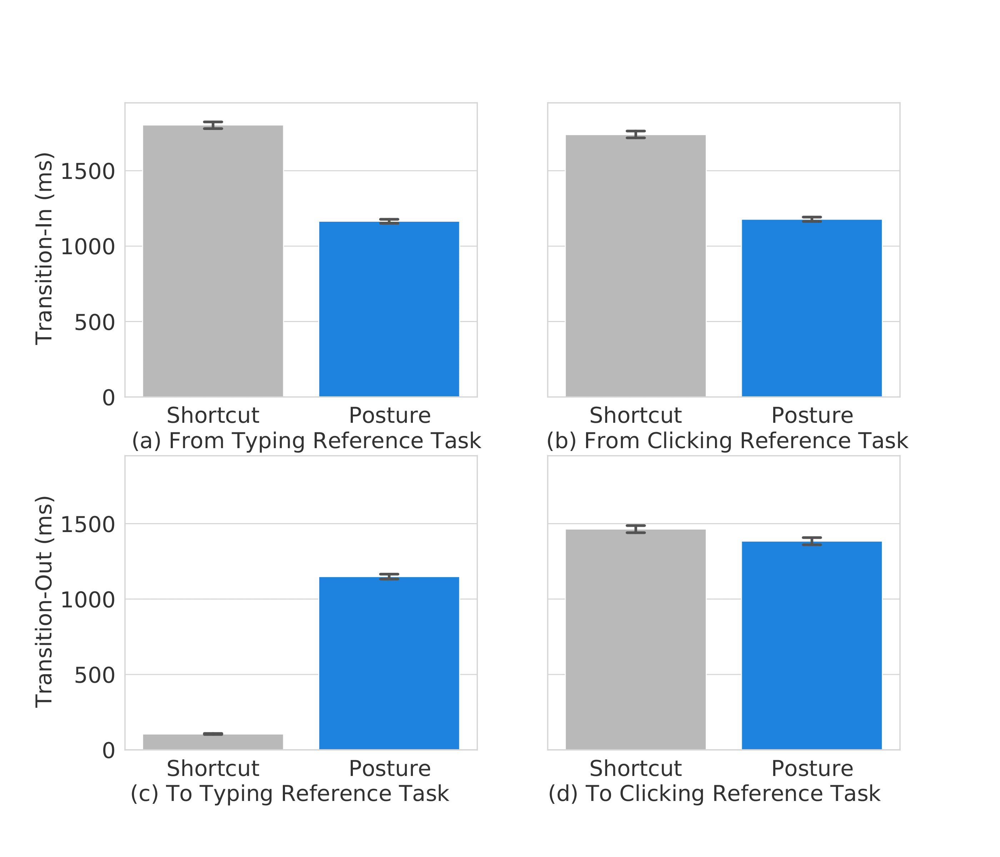

https://github.com/typealike
https://github.com/typealike
Quick Facts
Overall, our work contributes:
- A set of near-keyboard hand postures that are acceptable to users, recognized reliably, and fast to perform.
- A dataset of nearly 350K posture images captured under different lighting conditions and two keyboard backgrounds
We evaluate our approach by answering three questions: Is this style of postures preferable by users? Can they be recognized reliably? Are they quick and easy to perform?
Design Considerations for the Interaction Vocubulary
Our posture set was chosen to support our goal of a discrete command invoking method that aligns with natural laptop usage. The postures are variations of hand posture styles, all based on three design considerations:
-
Recognition without a key press:
Postures should not conflict with touch-typing hand motor behaviour when pressing keys and “disentangle” command execution from key-press events
- Performed on or near the keyboard surface:
Postures should be compatible with maintaining a near-resting arm posture where the wrist is in constant contact with the laptop case.
- Simple and easy to perform:
Postures should be naturally comfortable to perform for the user but still distinguishable for detection in order to be practical.
Abstract
We propose a style of hand postures to trigger commands on a laptop. The key idea is to perform hand-postures while keeping the hands on, beside, or below the keyboard, to align with natural laptop usage. 36 hand-posture variations are explored considering three resting locations, left or right hand, open or closed hand, and three wrist rotation angles. A 30-participant formative study measures posture preferences and generates a dataset of nearly 350K images under different lighting conditions and backgrounds. A deep learning recognizer achieves over 97% accuracy when classifying all 36 postures with 2 additional non-posture classes for typing and non-typing. A second experiment with 20 participants validates the recognizer under real-time usage and compares posture invocation time with keyboard shortcuts. Results find low error rates and fast formation time, indicating postures are close to current typing and pointing postures. Finally, practical use case demonstrations are presented, and further extensions discussed.
Technique
With these design considerations in mind, we created a style of postures that use different hand forms, kinematics of wrist rotation, and distinct locations on or near the keyboard that expands the input interaction space around the laptop.
This gives a design space of 36 postures that can be fully defined by variations along four parameters:
- Hand (dominant, non-dominant)
- Form (open, closed)
- Orientation (0°, 90°, 180°)
- Surface (on, beside, below)
Finally, all postures are characterized with a slightly extended thumb to appear unique for recognition without a keypress.
!!! Experiment section
!!! A quick summary of our experiment. Remember, random people might read this who may or may not understand what we've done!
!!! Figures are fun. Don't overwhelm people with text, this is mostly just a place to show off some figures.
!!! Add really high-level summaries so the figures have some context. Use different Bootstrap classes so figures show up at different sizes. Adjust to taste.
  What Can We Learn?
- !!! Bold claim: Have a few extra insights here.
- !!! Bold claim: Have a section here that answers "okay, but why should I care?".
- !!! Bolding is fun: Wow look, another one!
Publication
Nalin Chhibber, Hemant Surale, Fabrice Matulic, Daniel Vogel. 2021. Typealike: Near-Keyboard Hand Postures for Expanded Laptop Interaction. In proceedings of In PACM on Human Computer Interaction, Vol. 5, ISS.
BibTeX
@inproceedings{Chhibber2021,
author = {Nalin Chhibber, Hemant Surale, Fabrice Matulic, Daniel Vogel},
title = {Typealike: Near-Keyboard Hand Postures for Expanded Laptop Interaction},
year = {2021},
publisher = {Association for Computing Machinery},
booktitle = {In proceedings of In PACM on Human Computer Interaction, Vol. 5, ISS},
keywords = {interaction techniques, input re-mapping},
location = {ŁÓDŹ, POLAND},
series = {ISS '21}
}
Contact Us
Questions? Feel free to contact:
Nalin Chhibber, Hemant Surale, Fabrice Matulic, Daniel Vogel
University of Waterloo, Preferred Networks Inc. © 2021